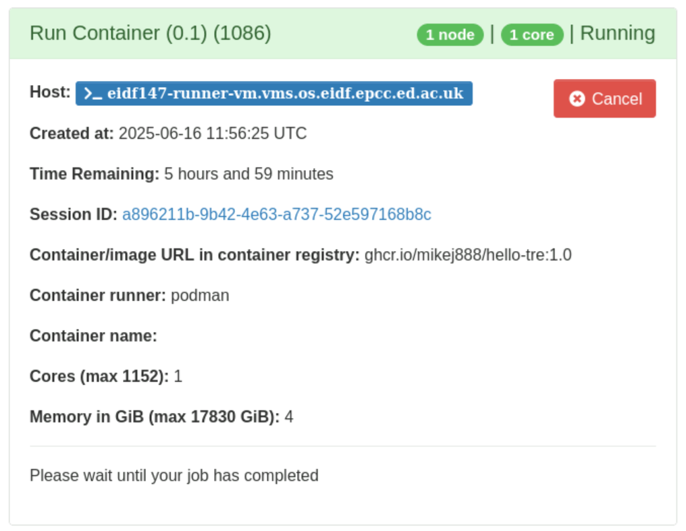
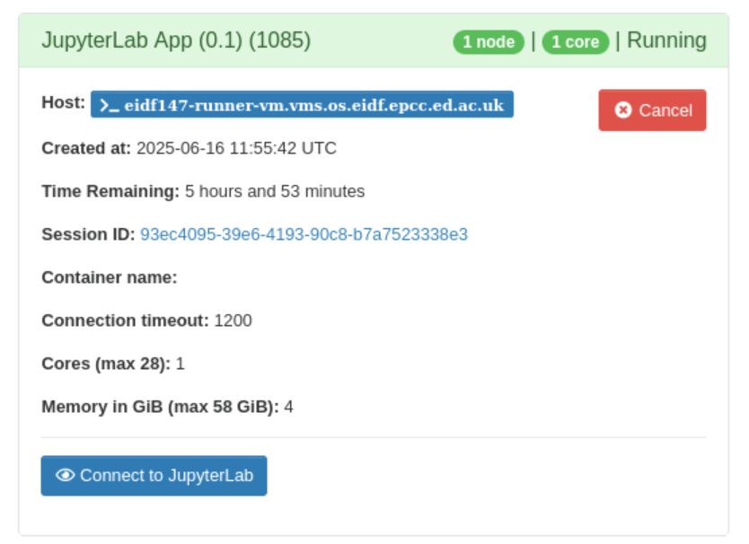

Run jobs
Introduction
Open OnDemand allows you to run compute and data-related tasks on compute resources available to your safe haven.
Certain users of certain safe havens may also have access to TRE-level compute resources, for example, the Superdome Flex high-performance computing cluster.
This page introduces how Open OnDemand runs tasks, and information you need to know about when running tasks. Run containers focuses on aspects of running containers within this job execution environment.
Back-ends, clusters, jobs and apps
A compute resource upon which tasks can be run is called a back-end, or, in some parts of Open OnDemand, a cluster.
Each run of a task on a back-end is called a job
An Open OnDemand component that allows you to run jobs, or other useful functions, is called an app.
Many apps allow you to run jobs on back-ends. However, other apps perform other useful functions, for example, the Active Jobs app which allows you to see which of your jobs have been submitted, are running, or have completed.
A subset of apps that run jobs on back-ends are called interactive apps. All Container Execution Service apps that run containers are classed, in Open OnDemand terms, as 'interactive' even those apps that run non-interactive containers!
Info
In standard deployments of Open OnDemand, interactive apps refer only to apps that run web- or GUI-based services or software. However, within the TRE Open OnDemand service, Open OnDemand's application programming interface for interactive apps is used to implement both apps that run containers that run such services and those that run any other containers, because that interface is easier to implement apps with than that for non-interactive (in the Open OnDemand sense) apps!
Back-end (cluster) names
Within Open OnDemand, back-ends are typically referred to via human-readable names. A selection of back-end names includes:
- DataLoch 1234 5678 GPU server
- eDRIS National Safe Haven GPU desktop 01
- ODAP GPU desktop 01
- Smart Data Foundry GPU desktop 01
- Superdome Flex
A convention is adopted whereby safe haven-specific back-ends always cite the safe haven name.
Within some interactive apps, you will see back-ends referred to via 'short-names'. Typically, these short-names are derived from the back-ends' VM names. However, a convention is adopted whereby safe haven-specific back-ends include the text 'tenant', to distinguish them from any TRE-level back-ends to which you might have access. So, for example, the short-names corresponding to the above back-ends are:
- dap_tenant_1234_5678
- nsh_tenant_gpu_desktop01
- odp_tenant_gpu_desktop01
- smartdf_tenant_gpu_desktop01
- shs_sdf01 - as the Superdome Flex is a TRE-level, not safe haven-specific, back-end its short-name does not include 'tenant'.
Within job cards on the My Interactive Sessions page, described below, you will see the VM names upon which the jobs are running.
Info
The use of 'tenant' in short-names is adopted as a means to exploit Open OnDemand's use of filters to constrain certain apps to only be applicable to certain back-ends.
Job scheduling and execution
To run a job, including those created by apps, you need to select the resources - the number of CPUs/cores and amount of memory - you think your job will need.
Open OnDemand then submits the job to a job scheduler which schedules the job onto the selected back-end based upon the resources requested. Your job is then queued until sufficient resources are available on the selected back-end to run your job. This will depend upon:
- Resources available on your selected back-end.
- Extent to which jobs currently running on the back-end are using the back-end's resources.
- Resources requested by your job.
- Jobs from yourself and others already in the queue.
Note
Open OnDemand and the back-ends use the Slurm open source job scheduler and workload manager to schedule and run jobs on back-ends.
Unless you are using the Job Composer app, you should not have to worry about the details of how Slurm works. Open OnDemand's user interface and apps are designed to hide its details from users.
Tip
As back-ends are used by multiple users, be considerate to other users, and take care to request only the resources you think your job will need. This helps to ensure fair use for everyone.
Tip
See Open OnDemand tips for tips and troubleshooting relating to relating to requesting resources and job queues.
When a job is submitted, a runtime is also requested. If a job takes longer than this runtime, then it is cancelled.
Warning
Container Execution Service apps will run for a maximum of 6 hours.
Warning
Any running jobs, and containers, will be cancelled during the monthly TRE maintenance period.
For interactive apps, Open OnDemand uses the job scheduler to determine when the job has started. Apps that run interactive services (e.g., JupyterLab or RStudio Server) will then wait for the service to become available. If this does not occur within an app-specific period, the connection timeout, then the app's job will cancel itself.
Note
In standard deployments of Open OnDemand, the notification sent by the app includes information required by Open OnDemand to display how to connect to web- or GUI-based services started by the app. However, as mentioned above, all Container Execution Service apps that run containers use Open OnDemand's application programming interface for interactive apps, so you may see the connection timeout for the apps that run non-interactive containers too.
Your ondemand directory
Within your home directory on the Open OnDemand VM, Open OnDemand creates an ondemand directory. This is where Open OnDemand stores information about your current session and previous sessions.
Every time a job is created by an app, Open OnDemand creates the job files for the app in a job-specific job context directory in an app-specific directory.
Job Composer app job files are created in a directory:
$HOME/ondemand/data/sys/myjobs/projects/default/JOB_COMPOSER_ID/
where JOB_COMPOSER_ID is a unique job ID created by the app. For example:
$HOME/ondemand/data/sys/myjobs/projects/default/1/
Interactive app job files are created in a directory:
$HOME/ondemand/data/sys/dashboard/batch_connect/sys/APP_NAME/output/SESSION_ID/
where APP_NAME is the app name and SESSION_ID a unique session identifier. For example,
$HOME/ondemand/data/sys/dashboard/batch_connect/sys/batch_container_app/output/e0b9deeb-4b9c-43f8-ad3f-1c85074a1485/
Open OnDemand caches information within this ondemand directory including information on previous jobs and information you last entered within app forms.
Warning
You can delete the ondemand directory - Open OnDemand will recreate it the next time you log in - but your history of previous jobs, and any cached values, will be lost.
Tip
You may find it useful to delete specific job context subdirectories from the ondemand directory if the ondemand directory grows to large.
Unsynched home directories
For most back-ends, your home directory is common to both the Open OnDemand VM and the back-ends so your directories and files on the Open OnDemand VM, and changes to these, are reflected on the back-ends and vice-versa.
However, you may have access to back-ends where your home directory is not common to both the Open OnDemand VM and the back-end i.e., you have unsynched, separate, home directories on each VM.
Currently, the back-ends where home directories are not common to both the Open OnDemand VM and the back-ends are as follows:
- Superdome Flex, shs-sdf01.nsh.loc.
- All DataLoch VMs.
To use such back-ends, you need to do some set up to allow Open OnDemand to automatically copy your ondemand directory, and so your job files, to the back-end when you submit a job. How to enable this is described in the following section on Enable copy of ondemand directory to a back-end.
You will also have to log into these back-end to view files created on these back-ends when you run jobs - see Log into back-ends
Enable automated copy of ondemand directory to a back-end
To enable Open OnDemand to automatically copy your ondemand directory to a back-end where your home directory is not common to both the Open OnDemand VM and the back-end, you need to set up a passphrase-less SSH key between the Open OnDemand VM and the back-end.
Note
Setting up SSH keys does not need to be done for back-ends where your home directory is common to both on the Open OnDemand VM and the back-ends.
Set up a passphrase-less SSH key between the Open OnDemand VM and the back-end:
- Select Clusters menu, Open OnDemand host Shell Access option.
- A new browser tab with an SSH session to the back-end will appear.
- When prompted, enter your project username and password.
-
Create a passphrase-less SSH key:
ssh-keygen -t rsa -b 4096 -C "open-ondemand" -N "" -
Copy public key to back-end:
ssh-copy-id BACK-END-HOSTNAME.nsh.locInformation on the copy will be output:
/usr/bin/ssh-copy-id: INFO: Source of key(s) to be installed: "/home/user/.ssh/id_rsa.pub" /usr/bin/ssh-copy-id: INFO: attempting to log in with the new key(s), to filter out any that are already installed /usr/bin/ssh-copy-id: INFO: 1 key(s) remain to be installed -- if you are prompted now it is to install the new keys (user@BACK-END-HOSTNAME.nsh.loc) Password: -
When prompted, enter your project username and password. The key will then be added to the back-end:
Number of key(s) added: 1 Now try logging into the machine, with: "ssh 'BACK-END-HOSTNAME.nsh.loc'" and check to make sure that only the key(s) you wanted were added. -
Check passphrase-less access to back-end:
ssh BACK-END-HOSTNAME.nsh.loc hostnameFor example:
BACK-END-HOSTNAME.nsh.loc hostname -
You should not be prompted for a passphrase or password.
What happens when a job is submitted
Briefly, when a job is submitted, the following occurs:
-
Open OnDemand creates a job context directory under your
ondemanddirectory.- For the Job Composer app:
ondemand/data/sys/myjobs/projects/default/JOB_COMPOSER_ID/- For interactive apps:
ondemand/data/sys/dashboard/batch_connect/sys/APP_NAME/output/SESSION_ID/ -
Open OnDemand submits the job to the job scheduler to run the job on your chosen back-end.
- A job scheduler preprocessing step is used to create a log file in an
ondemand/logs/slurmdirectory. - For back-ends where your home directory is not common to both both the Open OnDemand VM and the back-end, a job scheduler preprocessing step automatically copies your
ondemanddirectory to the back-end.
- A job scheduler preprocessing step is used to create a log file in an
- The job scheduler queues your job, pending processing and memory resources on the back-end becoming available. The job status will be 'Queued'.
- When resources become available on the back-end, your job runs:
- For jobs created via the Job Composer app, the job status will be 'Running'.
- For jobs created via apps, the job status will be 'Starting' and, when a notification is received from the running app by Open OnDemand, the job status will switch to 'Running'.
- Your job will complete. The job status will be 'Completed'.
Note
The job status does not display whether a job that is 'Completed' did so with success or failure. Whether a job succeeded or failed can be seen in the job details for the job which can be seen via the Active Jobs app.
Browse and manage jobs
You can browse and manage jobs via the Active Jobs app.
For interactive app jobs (not those created by the Job Composer app), you can also use the My Interactive Sessions page, which provides more app-specific information.
My Interactive Sessions page
Click My Interactive Sessions (overlaid squares icon) on the menu bar to open the My Interactive Sessions page.
My Interactive Sessions menu button
The My Interactive Sessions page shows app-specific jobs that have been submitted, are running, or have completed. Each job has a job card.
Note
Only information for jobs arising from what Open OnDemand terms 'interactive apps' is shown. All Container Execution Service apps are classed as 'interactive apps'. Information on jobs submitted by Open OnDemand's Job Composer app are shown on that app's own page.
Job cards
When an interactive app's job is submitted, a job card is created and shown with information about the app's job including:
- Job status (on the top right of the job card): One of 'Queued', 'Starting', 'Running', 'Held', 'Suspended', 'Completed', 'Undetermined'.
- 'Host': For 'Running' jobs, the back-end on which the job is running.
- 'Created at': For 'Queued' jobs, the time the job was submitted.
- 'Time Requested': For 'Queued' jobs, the runtime requested for the job.
- 'Time Remaining': For 'Starting' and 'Running' jobs, the runtime remaining.
- App-specific information, which includes values from the app form.
- For some apps, this will include the 'Connection timeout'.
- App-specific status information, and, for apps that run containers with interactive web- or GUI-based services, a button to connect to the service.
 Example job card for the Run Batch Container app
 Example job card for the Run JupyterLab Container app
Note
The job status does not display whether a job that is 'Completed' did so with success or failure. Whether a job succeeded or failed can be seen in the job details for the job which can be seen via the Active Jobs app.
Log in to back-end on which job is running
For 'Running' jobs, click the Host link to log into the back-end on which the job is running.
Open File Manager to job context directory
Click the Session ID link to open the File Manager, pointing at the job context directory for the job on the Open OnDemand VM.
Note
When using a back-end where your home directory is not common to both the Open OnDemand VM and the back-end, then, if your job creates files on the back-end, you will have to log into the back-end to view your files.
Cancel a job
Click Cancel on a job card to cancel a running job.
Relaunch a job
Click Relaunch Job (circling arrows icon) on a job card to relaunch a previously cancelled or completed job. A new session ID, and new set of job files, using the same configuration as for the previous run of the app, will be created.
Relaunch Job button
Delete a job card
Click Delete on a job card to delete the job card.
Note
Deleting a job card does not delete the associated job context directory from the ondemand directory.
Log files
Job scheduler log files
When a job is submitted to a back-end, a log file is created within an ondemand/logs/slurm directory within your home directory on the Open OnDemand VM.
Log files have name sbatch-YYYYMMDD-HHMMSS_OPEN_ONDEMAND_CLUSTER_NAME. For example, sbatch-20240807-082901-nsh_tenant_gpu_desktop01.
An example of the contents of a log file is as follows:
# Open OnDemand back-end: OPEN_ONDEMAND_CLUSTER_NAME
# Time: YYYY-MM-DD HH:MM:SS
# Process: PROCESS-ID
# Open OnDemand server environment
...values environment variables in current Open OnDemand environment...
# sbatch arguments from Open OnDemand
...arguments passed from Open OnDemand to 'sbatch' command which runs job...
Note
You should not have to concern yourself with the contents of these log files but they might prove useful if you need help with troubleshooting issues with running jobs via Open OnDemand.
Tip
You can safely delete these log files, if they're taking up too much space.
App log files
When an app job runs, a log file is created within the job-specific job context directory in an app-specific directory under your ondemand directory. This log file includes information from the app itself plus logs captured from anything spawned by the app, for example, containers, as these runs.
It can be useful to check the log file when debugging.
Depending on the app implementation, the log file may include a job ID, a unique job ID created by the job scheduler, when you submitted the job.
Note
The job ID is not the same as the session ID used for interactive apps or the job composer ID used by the Job Composer. Rather, the job ID is created by the job scheduler.
Each job created by an app has both an app ID and a job scheduler job ID.